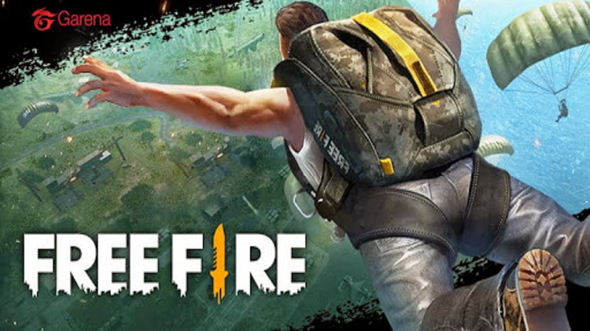
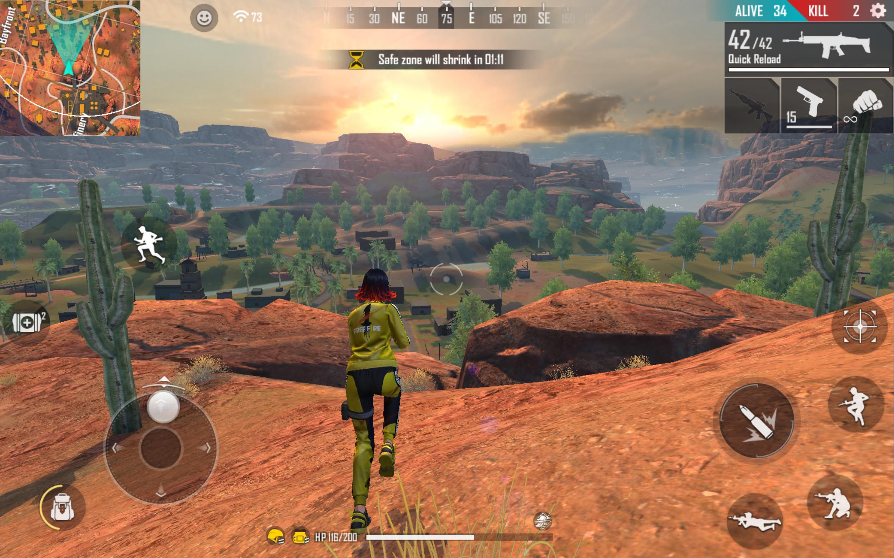

The Best Player

GARENA FREE FIRE
Se você chegou até aqui, é bem provável que você já tenha ouvido algo sobre o que é Free Fire mas quer conhecer um pouco mais. Nós vamos ajudar você!
Em 2017 quando o Free Fire foi lançado, o gênero de jogo Battle Royale estava começando a crescer de forma acelerada, graças ao sucesso de PUBG. E foi nesse novo gênero que o Free Fire se encontrou e começou seu crescimento.
Hoje o Free Fire pode se orgulhar por ser o jogo em dispositivos móveis mais popular no Brasil.
Uma pesquisa realizada pela Panorama Mobile Time/Opinion Box sobre o uso de apps, mostrou que o Free Fire é o jogo móvel mais popular do Brasil com 12% de usuários .
E não só isso, o Free Fire bateu a incrível marca de $1 bilhão de dólares em receita, fazendo dele o 23° jogo da lista dos jogos mobile com arrecadação bilionária.
Os grandes mercados que o Free Fire atinge são os mercados de países emergentes, pois são nestes mercados que grande parte da população não tem acesso ou condições de comprar dispositivos móveis de valores e configurações mais elevados.
Desta forma, um jogo como Free Fire, que não exige dispositivos móveis “parrudos” para rodar, ganha espaço.
Suas configurações são leves e pode-se dizer que ele roda em praticamente todos os celulares.
Além de não ocupar muito espaço, apenas 500MB, suas configurações garantem que ele rode até mesmo em celulares com apenas 1GB de memória RAM.
Com mais de 450 milhões de usuários registrados e picos de até 50 milhões de jogadores ativos no mesmo dia, você pode ter uma ideia de o que é jogo Free Fire.
Portanto vamos aprender um pouco mais sobre o que é e como funciona o jogo Free Fire.
Mas, e aí?! O que é Free Fire?
O Garena Free Fire é um jogo de ação no estilo shooter, segue o gênero Battle Royale. Um grande número de jogadores chegam em um local, normalmente uma ilha, e lá batalham por suas vidas até que só sobreviva um único jogador.
Free Fire é um jogo para dispositivos móveis (celulares, tablets…) desenvolvido e publicado pela Garena, uma empresa asiática fundada em 2009 em Singapura.
Por isso, em diversos lugares você verá o seu nome como Garena Free Fire.
Como funciona o jogo Free Fire?
Nem todo jogo do estilo Battle Royale funciona exatamente da mesma forma como funciona o jogo Free Fire entretanto eles compartilham de muitas características.
No Free Fire você e outros 49 jogadores chegam de avião em uma ilha. Enquanto o avião cruza esta ilha você pode saltar a qualquer momento e ir de paraquedas em direção ao local que você escolher.
Todos os jogadores chegam a ilha sem nenhum equipamento. Apenas com as roupas do corpo.
Portanto, assim que o jogador chega ao solo ele deve procurar por equipamentos como:
armas;
munições;
coletes;
capacetes e outros diversos itens.
Tudo isso irá ajudá-lo em sua sobrevivência, como na eliminação de oponentes ou mesmo sua própria proteção.
As partidas duram cerca de 10 minutos e para que todos os jogadores se encontrem, de tempos em tempos, o mapa vai se fechando, diminuindo a área de jogo de forma que todos os jogadores restantes se encontrem e apenas 1 saia sobrevivente.

The Best Player
O melhor site de E-SPORTS do Brasil!